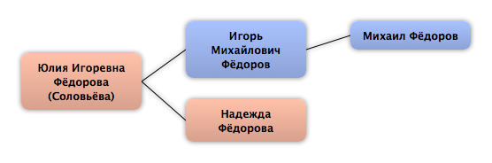

Домой
Домой
 Люди
Люди
 Семьи
Семьи
 Источники
Источники
 Диаграммы
Диаграммы
 Статистика
Статистика
Юлия Игоревна Фёдорова

Контекст

Дополнительные имена
| Тип | Имя |
|---|---|
| Фамилия в браке | Соловьёва |
Родители
| Отец | Дата рождения | Мать | Дата рождения |
|---|---|---|---|
 Игорь Михайлович Фёдоров Игорь Михайлович Фёдоров
|
Надежда Фёдорова
|
Родители и дети
| Партнёры | Дата рождения | Дети |
|---|
События
Факты
Медиа
Примечание
Источники
Родство
| Имя | Степень родства | Дата рождения | Место рождения | Дата смерти | Место смерти |
|---|---|---|---|---|---|
| Братья и сёстры | |||||
| Брат по одному из родителей | |||||
| Брат | |||||
| Родителей | |||||
| Отец | 1989 | ||||
| Мать | |||||
| Дедушки и бабушки | |||||
| Дедушка | |||||
| Тёти и дяди | |||||
| Тётя | 11.06.1905 | Москва, Россия | 28.06.1990 | Ленинград, СССР | |
| Двоюродные братья и сёстры | |||||
| Двоюродный брат | 22.08.1926 | Хабаровск, СССР | 08.05.2006 | Санкт-Петербург, Россия | |
| Двоюродные племянники (племянницы) | |||||
| Двоюродная племянница | 19.03.1963 | Ленинград, СССР | |||
| Двоюродный племянник | 22.02.1965 | Ленинград, СССР | |||
| Двоюродные внучатые племянники (племянницы) | |||||
| Внучатый племянник | 01.09.1988 | Ленинград, СССР | |||
| Внучатый племянник | 19.11.1991 | Санкт-Петербург, Россия | |||
| Внучатый племянник | 15.07.1995 | Санкт-Петербург, Россия | |||